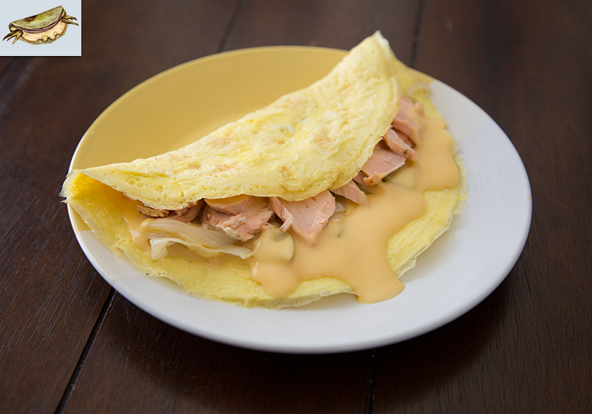

Wasteland Omelet

Description
The Wasteland Omelet is a filling meal made with the finest ingredients.
Every decent wastelander should have this recipe in their books!
Ingredients
- 3 eggs, beaten (per omelette)
- ½ onion, thinly sliced
- ¼ apple, thinly sliced
- 1 salmon filet
- Salt, to taste
- Pepper, to taste
- 2 tbsp flour
- 2 tbsp butter
- ½ tsp garlic powder
- 1 cup milk
- 1 cup cheddar
- Cayenne pepper (optional), to taste
Steps
- Place a pan over medium-high heat and allow it to warm. Salt and pepper the salmon. Place the salmon, skin side down on, in the hot pan and cook for 5 minutes. Flip and cook for another 4 minutes or until the salmon is cooked through. Place the salmon on a plate to cool.
- In a pan over high heat begin sauteing the onions. Once they have become translucent, about 5 minutes, add the apple. Cook until the apple has softened. Remove from the heat.
- Next the mac and cheese base. In a saucepan, over medium-high heat melt the butter. Add the flour and whisk together to form a roux.
- As the roux begins to smell like bread slowly whisk in the milk. Turn off the heat, add the cheese and whisk until combined.
- Begin warming a pan over medium heat. Once it is warmed add the beaten eggs and give it a few good swirls with a spatula. Spread it out and let it cook for about 3 minutes or until the edges begin to solidify. Carefully flip the omelette and allow it to cook for another minute. Remove it from the pan carefully onto a plate.
- Pour a thick layer of cheese sauce on top of the omelette. Next place a few spoonfuls of the onion and apple mixture. Finally add a layer of salmon. If you want to give the omelette an extra deathclaw kick, add some cayenne pepper over the salmon before folding the omelette closed.
Source: https://pixelatedprovisions.com/2015/06/15/fallout-new-vegas-wasteland-delight/